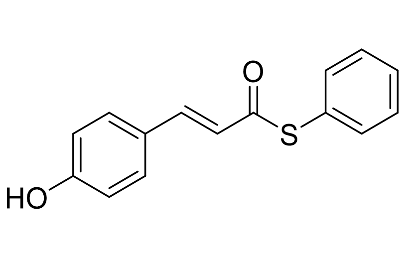

Resources
PYP chromophore
An activated chromophore for reconstituting photoactive yellow protein.
p-coumaric acid, thiophenyl ester
Activated chromophore for PYP
The thiophenyl ester of p-coumaric acid is an activated form of the PYP chromophore, used to reconstitute apo-PYP into the functional, photoactive holoprotein.
To request material, please contact the lab. A detailed protocol is also available.
